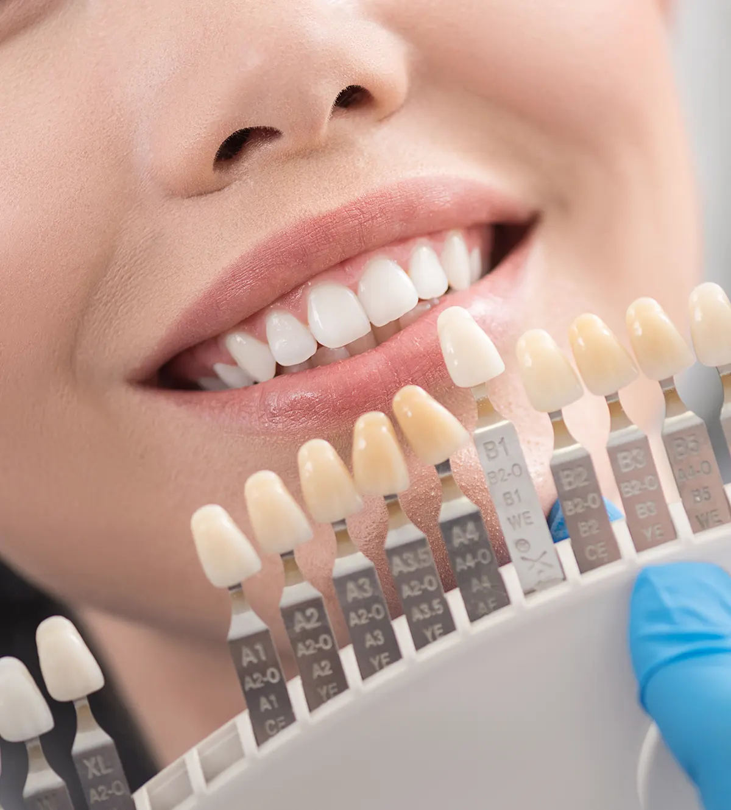
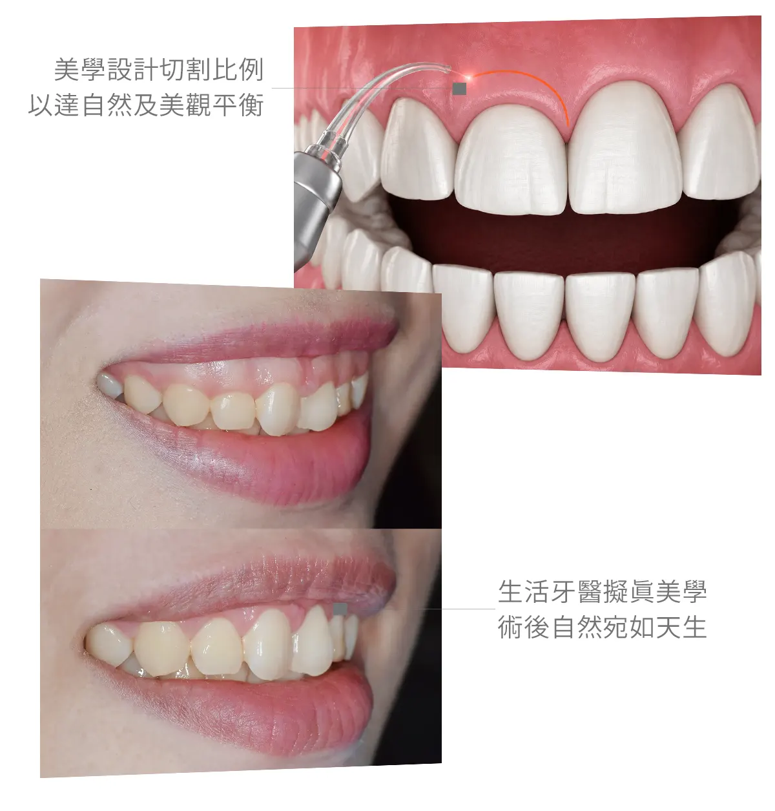

療程項目
牙齦整形術Gum Contouring
調整牙齦比例，讓微笑線更協調
牙齦整形術會評估牙齒長寬比例、牙齦高度、唇線與骨頭條件，改善露齦笑、牙齦不對稱或牙齒看起來過短等問題。

療程介紹
了解牙齦整形術，選擇合適治療
牙齦整形術會評估牙齒長寬比例、牙齦高度、唇線與骨頭條件，改善露齦笑、牙齦不對稱或牙齒看起來過短等問題。
生活牙醫會依照每位患者的口腔條件、期待、預算與長期維護需求，安排完整檢查與醫師說明。療程開始前會先釐清適合對象、可能限制與替代方案，讓治療計畫更透明。
實際治療方式與時間會因牙齒狀況、牙周健康、咬合、生活習慣與全身病史而異，建議以現場醫師診斷為準。

牙齦比例設計
評估牙齒長寬、牙齦高度與唇線關係
改善不對稱
針對牙齦高低不一進行輪廓調整
可合併美學修復
與貼片、全瓷冠或美白共同規劃笑容
術前條件評估
依牙周、骨頭與生物寬度決定治療方式
常見問題
牙齦整形術療程FAQ
整理諮詢時常見的問題，協助您在看診前先掌握基本方向。
療程會在麻醉下進行，術後可能有輕微腫脹或不適，需依醫囑清潔與回診。
不一定。露齦笑可能與上唇活動、骨骼、牙齒萌發位置或牙齦有關，需要檢查後判斷。
需視牙齦穩定狀況而定。部分案例需要等待牙齦癒合後，再進行正式貼片或牙冠製作。
立即諮詢牙齦整形術
歡迎預約諮詢，由醫師一對一親診為您規劃療程，讓我們一起打造最符合需求的治療方案